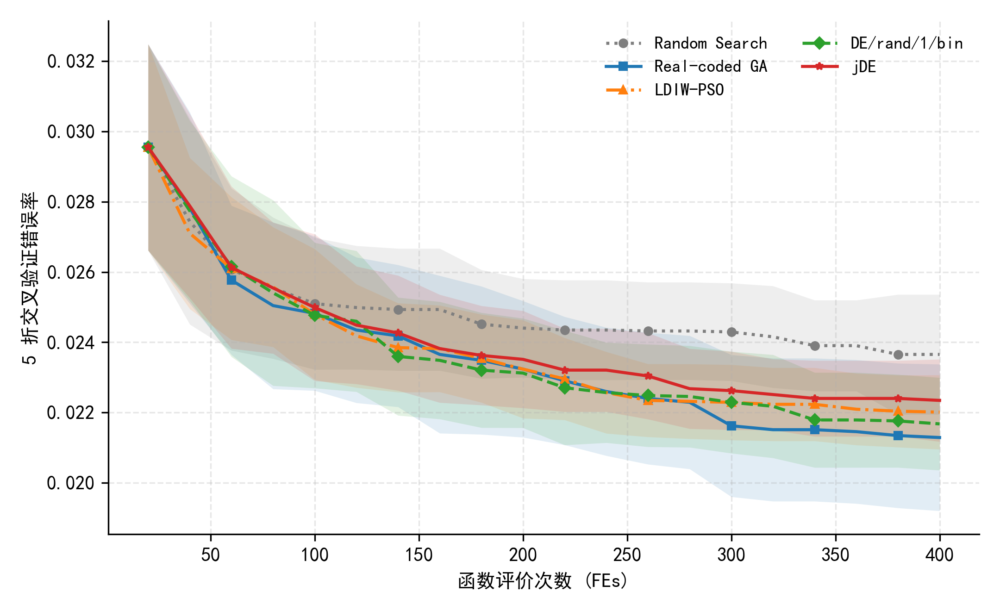

Evolutionary Computation
Genetic algorithms, particle swarm optimization, differential evolution, and their parameter adaptation mechanisms.
Undergraduate in Artificial Intelligence
I am a B.Eng. student at the School of Artificial Intelligence, Jilin University. My interests lie in evolutionary computation, black-box optimization, and machine learning, with a focus on making small neural networks easier to tune under limited computational budgets.
Education
School of Artificial Intelligence, Jilin University, Changchun, China.
Coursework: evolutionary computation, machine learning, optimization, programming.
Research Interests
Genetic algorithms, particle swarm optimization, differential evolution, and their parameter adaptation mechanisms.
Expensive black-box search for mixed continuous and integer hyperparameters, with small evaluation budgets.
Small neural networks, cross-validation, and reproducible experiment design on standard datasets.
Selected Project

A reproducible comparison of Random Search, real-coded GA, LDIW-PSO,
DE/rand/1/bin, and jDE for tuning a two-layer MLP on the scikit-learn
digits dataset. The four-dimensional search space mixes
learning rate, L2 penalty, and two hidden-layer sizes; the objective is
the 5-fold cross-validation error over 20 independent runs.
Real-coded GA reached the lowest mean error (0.0213), followed by DE/rand/1/bin (0.0217) and LDIW-PSO (0.0220). jDE's individual parameter adaptation did not outperform fixed-parameter DE at the 400-evaluation budget, which is discussed as a negative result in the project report.
Contact
I am happy to discuss evolutionary algorithms, hyperparameter optimization, or reproducible machine-learning experiments.